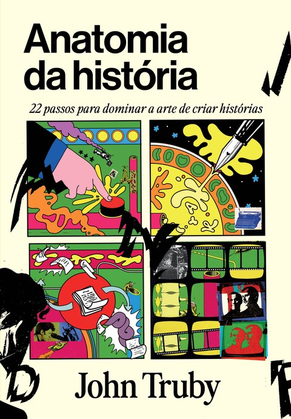
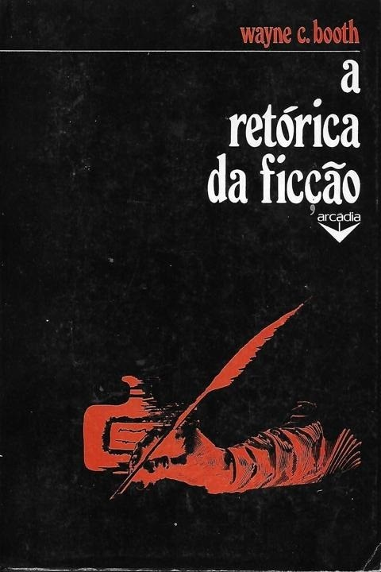
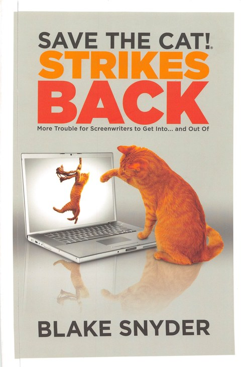
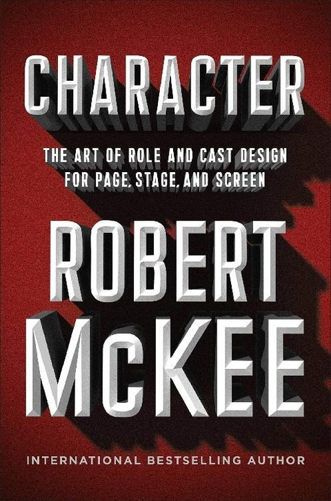
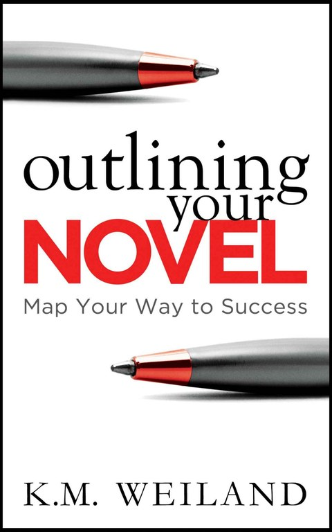
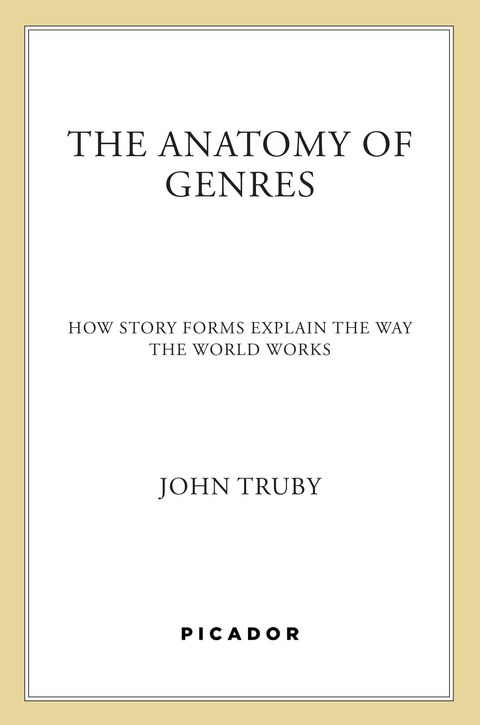
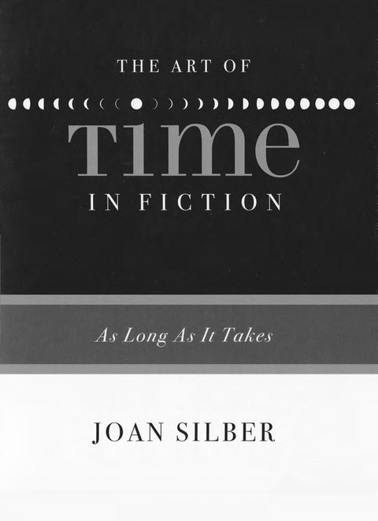
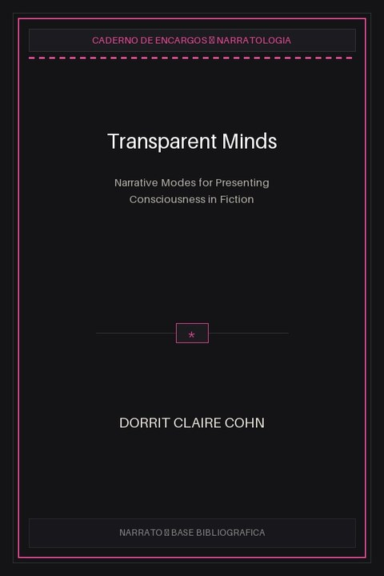
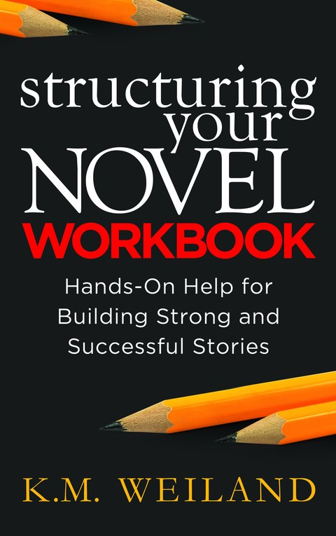

Pedra Basilar
1997
"Story: Substância, Estrutura, Estilo e os Princípios da Escrita de Roteiro"
Robert McKee
Forma arquetípica viva contra fórmulas mecânicas enrijecidas; o conflito em três níveis; a Ideia Governante que ancora o clímax sob máxima pressão moral.
Pedra Basilar
1983
"Da Criação ao Roteiro"
Doc Comparato
A dramaturgia como ofício de carpintaria e marretadas conscientes na bancada; a trindade prática de ideia matriz, conflito e ação dramática no canteiro.

Pedra Basilar
1979
"Manual do Roteiro / Screenplay"
Syd Field
O paradigma clássico em três atos, incidentes incitantes e pontos de virada como esqueleto de sustentação do edifício cinematográfico.

Pedra Basilar
2007
"Anatomia da História: 22 Passos Para se Tornar um Mestre"
John Truby
Crescimento orgânico da trama que rompe esquemas geométricos mecânicos; a linha moral que vincula falha do personagem a cada batida do enredo.
Argamassa
1996
"Pedagogia da Autonomia: Saberes Necessários à Prática Educativa"
Paulo Freire
A destruição da educação bancária; curiosidade epistemológica e a práxis libertadora que transforma a realidade concreta de cada Operari.

Caderno
2000
"Sobre a Escrita: A Arte em Memórias"
Stephen King
A caixa de ferramentas do escritor operário; corte de gordura verbal, eliminação impiedosa de advérbios e respeito ao diálogo direto.

Caderno
2013
"The Art of Character"
David Corbett
O abismo entre o papel social da caracterização e os segredos inconfessáveis do caráter; a voltagem gerada pela resistência do meio.

Caderno
1961
"A Retórica da Ficção"
Wayne C. Booth
O autor implícito, o narrador não-confiável e as estratégias de cumplicidade ética e dramática entre emissor e plateia.

Caderno
2016
"The Art of Perspective: Who Tells the Story"
Christopher Castellani
Abertura de vãos e janelas narrativas; modulação precisa entre foco interno, testemunha e perspectiva multifocal.

Caderno
2005
"Salve o Gato! (Save the Cat!)"
Blake Snyder
Os 15 batimentos do Beat Sheet como gabarito de controle de carga; o Midpoint e a noite escura da alma na arquitetura comercial.

Caderno
2009
"Salve o Gato! Strikes Back"
Blake Snyder
Diagnóstico de falhas de sustentação e técnicas de correção estrutural para peças com frouxidão dramática.

Caderno
1998
"The Screenwriter's Problem Solver"
Syd Field
Vistoria e reparos cirúrgicos: identificação e conserto de rachaduras no enredo, perda de ritmo e arcos estagnados.

Caderno
2020
"Character: The Art of Role and Cast Design"
Robert McKee
Design de elenco em constelação; polaridades morais, funções dramáticas e distribuição balanceada de carga psicológica.

Caderno
2016
"Diálogo: A Arte da Ação Verbal"
Robert McKee
Ação verbal como cimento estrutural; o subtexto em camadas e o diálogo como combate de vontades implícitas.

Caderno
2014
"How to Write Dazzling Dialogue"
James Scott Bell
Ritmo, cortes secos e compressão de falas para manter a tração contínua da cena sem gordura expositiva.

Caderno
2011
"Outlining Your Novel"
K. M. Weiland
Metodologia de prancheta e delineamento prévio para conciliar liberdade inventiva com fundações de alvenaria inquebráveis.

Caderno
2016
"Creating Character Arcs"
K. M. Weiland
A Mentira em que o Personagem Acredita, a Ferida Primordial (Fantasma) e a colisão libertadora com a Verdade.

Caderno
2022
"The Anatomy of Genres"
John Truby
Fachadas temáticas e contratos estéticos: como combinar gêneros narrativos sem desmoronar as regras de mundo da obra.

Caderno
2013
"Structuring Your Novel"
K. M. Weiland
A engenharia do micro e macroenredo: cenas e sequências (Scene and Sequel) como unidades celulares da ação.

Caderno
2017
"Write Worlds Your Readers Won't Forget"
Stant Litore
Topografia e cenografia dramática: o espaço físico como força antagonista viva e espelho das dores do protagonista.

Caderno
2009
"The Art of Time in Fiction"
Joan Silber
Arquitetura cronológica: manipulação de andamento, elipses, saltos temporais e tempo subjetivo na experiência do leitor.
Caderno
1985
"O Foco Narrativo"
Ligia Chiappini Moraes Leite
Teoria crítica do ponto de vista e posições do narrador; distâncias psíquicas e ângulos de incidência da luz narrativa.

Caderno
2015
"Psychology Workbook for Writers"
Darian Smith
Fiação psicológica: mecanismos de defesa, tipos de personalidade e reações viscerais a traumas.

Caderno
2020
"Writing Your Story's Theme"
K. M. Weiland
Fachada e tema: o argumento ético que perpassa cada escolha dos personagens sem cair no moralismo vazio.

Caderno
1978
"Transparent Minds"
Dorrit Claire Cohn
Modos de representação da consciência interior na ficção: monólogo autônomo, discurso indireto livre e psicossíntese.
Caderno
2014
"Outlining Your Novel Workbook"
K. M. Weiland
Caderno prático de prancheta com exercícios passo a passo para escoramento de arcos e capítulos.

Caderno
2018
"Conquering Writer's Block and Summoning Inspiration"
K. M. Weiland
Desobstrução de dutos criativos: desarmando o perfeccionismo paralisante e reativando a tração prática da escrita.

Caderno
2017
"Creating Character Arcs Workbook"
K. M. Weiland
Bancada prática de testes para traçar os vetores positivos, neutros e negativos de evolução do avatar.

Caderno
2014
"Structuring Your Novel Workbook"
K. M. Weiland
Exercícios práticos de alvenaria para montagem modular de batimentos, sequências e clímax.